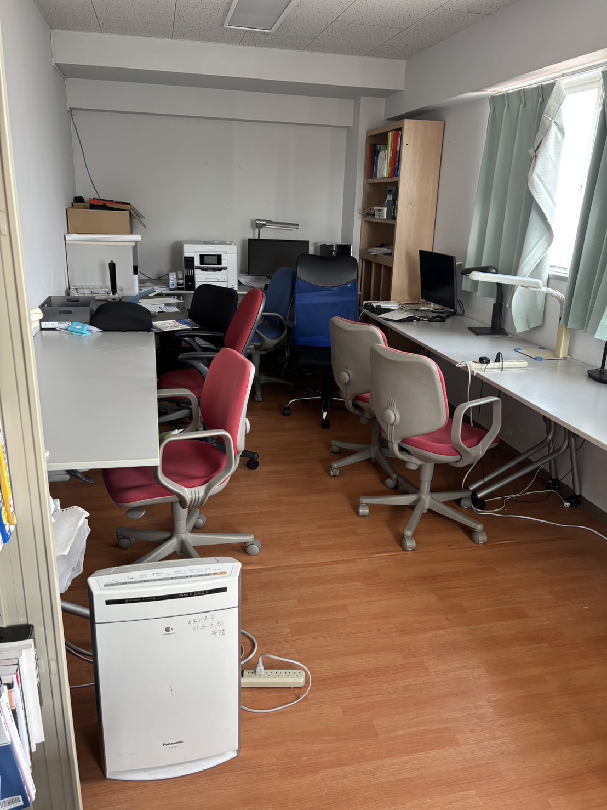
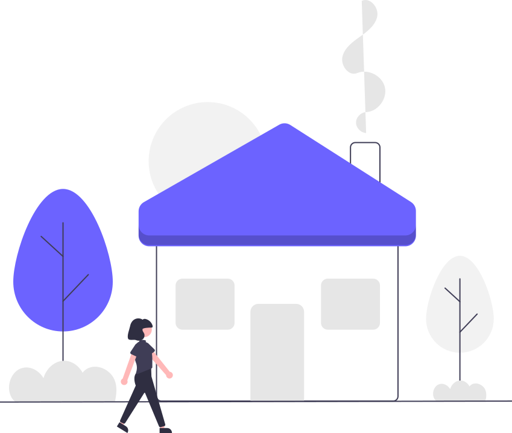
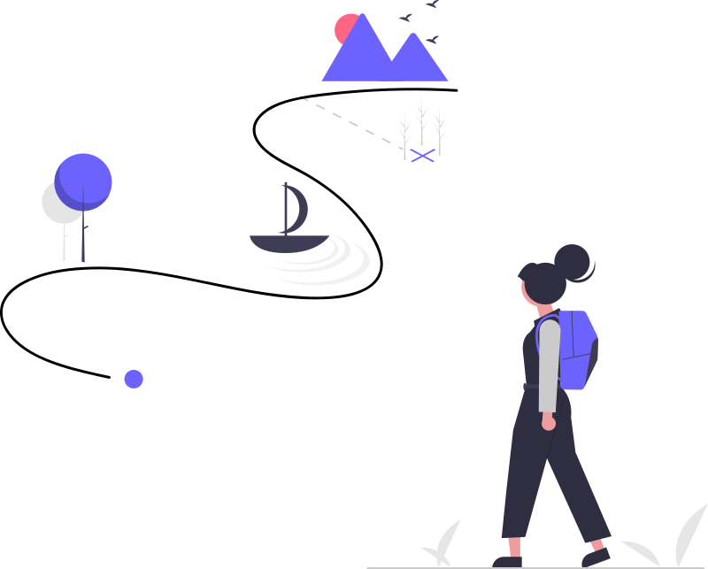

Cost
費用の目安
- 月額目安は約51,000円です。
- 初年度合計目安は760,000円です。
- 特待生の初年度合計目安は530,000円です。
Toyama Student Dorm in Tokyo
月額目安約5.1万円で、朝夕2食・全60室の個室・住み込みの見守り体制を備えた、東京での学生生活を始めやすい男子学生寮です。
月額目安 約5.1万円 / 食事 朝6:30〜9:00・夕18:30〜21:00 / 門限 22:00 / アクセス 京王線 東府中駅 徒歩約10分
3分でわかる青雲寮を見る青雲寮（せいうんりょう）は、東京都府中市にある富山県出身男子大学生のための公式富山県学生寮です。富山から東京へ上京する学生を対象にした「富山 寮」として、月額目安約5.1万円（寮費3万円＋食費約1.6万円＋月額約5,000円の負担金）で、朝夕2食・個室・セキュリティを備えた環境を提供しています。
富山県学生寮ならではの同郷ネットワークで、不安になりがちな東京生活を手厚くサポート。電気通信大学・東京農工大学・一橋大学など多摩エリアの大学へ通学しやすい立地で、学業と生活の両方を安心してスタートできます。
富山県学生寮では、新入寮生を対象とした「入寮時特待生制度」を実施いたします。選考により特待生に認定された方には、入寮費（5万円）と1年目の寮費半額（18万円）の合計23万円が免除（返金）されます。
詳細は入寮生の募集についてをご覧ください。
月額目安約5.1万円（寮費3万円＋食費約1.6万円＋月額約5,000円の負担金）。東京の一人暮らしと比べて固定費を把握しやすい住まいです。
朝は6:30〜9:00、夕は18:30〜21:00。朝夕2食付きで、生活リズムを整えやすい環境です。
寮長・寮母の住み込み対応、門限22:00、寮内外の24時間監視体制で、初めての東京生活も安心です。
京王線 東府中駅から徒歩約10分。府中市の落ち着いた住環境から、都内主要大学へ通学しやすい立地です。
3-Minute Guide
費用、生活、安心の要点を、具体値だけで短くまとめています。


Cost
Daily Life
Safety
Community

For Parents費用、生活、安全、入寮までの流れを、保護者の判断順に1ページで整理しています。
Daily Life食堂、個室、自習室、浴場、門限、来客ルールまで、日々の暮らしを具体的に確認できます。
Quick Answers入寮資格、費用、生活、見学予約まで、最初に確認したい疑問をまとめています。
Cost Check青雲寮と東京・富山の一人暮らしを、月額と年額ベースで見比べられます。
University Guide大学ごとの通学時間やルート感を、写真付きの大学カードから確認できます。

Access Map最寄り駅からの徒歩導線や見学時の来訪方法を、地図つきで確認できます。
募集資料の公開や選考日程など、出願前に確認しておきたい最新情報をまとめています。
| 選考願書受付期間 | 選考日 | |
|---|---|---|
| 第1次選考 | 令和7年11月1日(土) ～ 12月12日(金) | 令和7年12月20日(土) |
| 第2次選考 | 令和7年12月22日(月) ～ 令和8年2月7日(土) | 令和8年2月14日(土) |
| 第3次選考 | 令和8年2月16日(月) ～ 令和8年3月5日(木) | 令和8年3月11日(水) |
行事や日々の様子を継続してお伝えする記録です。保護者の皆さまやOBの皆さまにも、寮の空気感を感じていただけるように更新しています。
A. 富山県出身で、東京都内および近郊の大学・大学院に在籍または入学予定の男子学生が対象です。
A. 月額目安は約5.1万円です。内訳は寮費3万円、食費約1.6万円、月額約5,000円の負担金（新聞、インターネット接続料、及び自室の電気料金等）です。
A. 府中市に位置し、京王線東府中駅から徒歩約10分。都内主要大学（東京大学、一橋大学、早稲田大学、慶應義塾大学など）へのアクセスが良好です。
A. はい、事前予約制で見学を受け付けています。保護者だけの見学・相談にも対応しており、実際の寮生活を確認していただけます。
A. はい。朝食は6:30〜9:00、夕食は18:30〜21:00です。日曜・祝日は食堂休業日ですが、共用キッチンを利用できます。
A. 現在は男子学生のみを対象としており、女子学生の入寮募集は行っていません。
A. 一人暮らしの場合、家賃・光熱費・日々の生活費を合計すると月7〜8万円以上かかることが多いですが、 青雲寮は月額目安約5.1万円（寮費3万円＋食費約1.6万円＋月額約5,000円の負担金）で生活費を見通しやすくできます。 一般的な一人暮らしと比べて、年間で数十万円の負担軽減が見込めます。
A. 門限は22:00です。22:00までは正面玄関が自動ドアで開き、それ以降はオートロック解除により入館します。 来客時は入館名簿への記入と寮長の許可が必要で、親族の方は事前相談のうえ宿泊相談も可能です。
A. 入寮希望者数や募集定員は年度によって変動するため、一概に倍率をお伝えすることはできません。 例年、一定数の応募をいただいておりますので、入寮を検討されている方は早めのご相談・出願をおすすめします。
入寮に関するご相談、見学のお申し込み、保護者からのご相談も受け付けています。